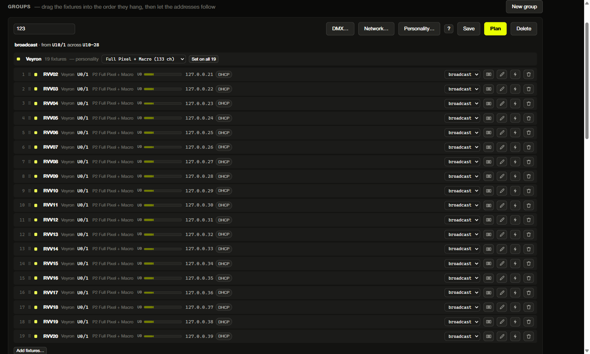

Polaris — fleet manager
Every RavLight fixture serves its own web page, which is all you need to manage one. Polaris is for managing forty: one service on a PC, a browser interface on top of it, and the whole rig in a single list. Status: preview.
Download
Two builds of the same program, for the two ways of running it. Windows 64-bit; version 0.3.2.
| Build | Use it when | |
|---|---|---|
| Installer 6.9 MB |
The machine stays with the rig. Registers Polaris as a service so it starts at boot, adds the firewall rules, and leaves a tray icon and a shortcut. Needs administrator rights once. | Download installer |
| Portable 8.9 MB · zip |
A laptop you carry to a venue. Unzip and double-click polaris.exe — nothing is installed, no administrator rights, and everything it stores lives in a data folder beside the binary. Delete the folder and it is as if it never ran. |
Download portable |
Either way the interface is at http://localhost:8420. Free to use, including commercially — licence, third-party notices. Please link people here rather than passing the file on, so everybody gets the current build.
Get-FileHash .\polaris-setup-0.3.2.exe
polaris-setup-0.3.2.exe
b1f924352defd9a40fecfe1d9b199a0fc746e674edf5e328d312d8fd52ddb054
polaris-0.3.2-windows-portable.zip
99f3446f123c6d0402ffed178e4b1422bd372d66e8620cd1fe36d275ad70cac8The portable build also carries fakedevice.exe, a simulator that puts a rig of fixtures on loopback addresses only — never on your network — so you can try the whole thing without hardware:
fakedevice.exe -mix veyron=6,orion=6,elyon=4 -base 20
polaris.exe serve -data ./data -loopbackWhat it does — and what it does not
Polaris manages devices: inventory, configuration, DMX patch, firmware updates, diagnostics. It does not transmit Art-Net or sACN and it is not a lighting console — your console keeps that job. Nothing in Polaris takes part in running a show; it is the tool for everything you do before and after one.
It is a local-network tool by design. Reaching a rig from another site is not a goal.
Why a service, and not just a web page
A browser page cannot manage RavLight devices on its own, for three reasons that have nothing to do with preference:
- No CORS headers. A page served from anywhere other than the device itself is not allowed to call that device's API. Something has to proxy.
- No discovery from a browser. Finding fixtures means UDP broadcast, and a browser cannot send one.
- No push. Every device endpoint is polled. One process absorbing that polling for the whole fleet is far kinder to an ESP32's async web server than fifty browser tabs each opening their own connections.
So Polaris runs as a service on one machine and serves the interface from there — open it on that PC, or from a phone or tablet on the same network.
Installing
On Windows the installer registers the service so Polaris starts at boot, adds the firewall rules, and leaves a shortcut that opens the interface. It creates three inbound rules on the private and domain profiles, and removes them again on uninstall:
| Rule | Port | What breaks without it |
|---|---|---|
| Device discovery | UDP 4211 | Every scan comes back empty and looks like a network fault |
| Interface | TCP 8420 | The interface is unreachable from a phone or tablet |
| Device pages | TCP 8500-8599 | A fixture's own web page cannot be opened through Polaris |
That same fixed reply port means only one scanner can run per host. If the port is already busy, it is almost always an older Polaris still running, or a RavLight device acting as a discovery master.
For a laptop you carry to a venue, no installer is needed — the binary serves the interface on its own:
polaris serve -data ./dataTo stop Polaris without uninstalling it, switch it off in the interface or from the tray icon. That needs no administrator rights, unlike changing a service's start type: it stops probing and closes its discovery sockets while staying reachable, so it can be switched back on the same way.
Several subnets
Fixtures are often spread across more than one subnet. The intended setup is to give the machine running Polaris an address on each of them — several addresses on one adapter is fine, and is what this is built for.
Polaris probes from every address it holds and picks the source address whose subnet contains the target: the firmware replies to the probe's source address, so a probe sent from the wrong one produces an answer that cannot come back. The Network page lists every address this machine holds, grouped by adapter, and lets you choose which interfaces to probe and which extra subnets to sweep.
Broadcast does not cross a router. Where it does not reach, Polaris probes specific addresses directly or sweeps a subnet host by host. It also warns about fixtures sitting on segments this machine has no address on, saying which are reachable by routing and which are not reachable at all.
Devices
One searchable list of everything that answered, showing what each fixture is actually set to. A fixture can be edited from its row or its panel — personality, universe, start channel, DMX input source and its IP address — and written straight to it. A device that is switched off keeps the setting in Polaris until there is hardware to send it to.
- Download and upload configuration, under the same names the fixture's own page uses. A file for the wrong fixture type is refused.
- Identify runs the highlight animation on that fixture, so you can tell which physical unit a row is.
- Replace swaps a dead fixture for a spare, carrying the configuration across.
- Placeholders let you place fixtures that are not on the network yet, with a full configuration, so binding one to real hardware later sends the right settings rather than somebody else's.
Groups and patching
A group is a list of fixtures with one row each, showing personality, start address, footprint, the universes it occupies, the address it answers on and whether that address is held by DHCP.

Start addresses are fields you type in: setting the first one lays the rest out from it, each by its own size — a Veyron's from its personality's section table, an Elyon output's from its pixel count and grouping. Plan asks how DMX reaches the group, where addresses start and what should happen at the end of a universe, then fills in what it proposes; Send it shows every change fixture by fixture before writing anything.
Where a fixture takes DMX from — Art-Net, sACN or the five-pin line — is set here too. An Orion counts as two fixtures in one box: a winch addressed from the device universe, and LED outputs carrying their own, so it gets a row each.
Projects
A project is everything Polaris holds for a production — the fleet and the patch — and it saves to a file and opens from one. Prepared at the workshop, opened in the venue.
A fixture in the file that this machine has never met is recorded as expected, with the configuration the file remembers, so the patch reads correctly before anything answers; discovery decides the rest. What never travels with a project: telemetry, the event log, the firmware cache and this machine's settings — those are facts about a PC on a LAN, not about a production.
Firmware updates
A fixture can check ravlight.com for a newer release on its own, but that is all it does: it hands you a download link, and you upload the file to it by hand. That is the right behavior for one fixture and unworkable for thirty — every one of them needs a route to the internet just to answer the question, and you still carry the same file to each in turn. Polaris fetches each release once and pushes it to the fleet from the LAN, re-hashing the image before every flash.
Selecting a device narrows the image list to that fixture's build. Firmware older than 2.23.15 does not report which build it takes, so for those you name the build explicitly — and a wrong binary does not come back over the network.
A rollout is deliberately unhurried. A fixture goes dark for the whole flash — the firmware suspends DMX while it writes — so Polaris updates a couple at a time rather than the whole rig at once, and sends the first one on its own: if an image is wrong, it takes one fixture and not the lot. Before it starts, it names the fixtures that are currently receiving DMX, in case somebody is using them.
What Polaris needs from a device
| Firmware | What works |
|---|---|
| below 2.23.3 | Discovery, configuration and patching — but one USB flash is needed before any network update |
| 2.23.3 and up | Everything, except that the build has to be named by hand for a firmware update |
| 2.23.15 and up | Everything, with the device reporting its own build so updates need no guesswork |